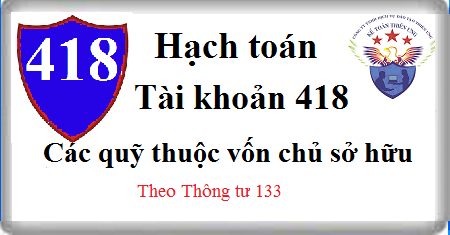

Hướng dẫn cách hạch toán Tài khoản 418 theo thông tư 133, Cách hạch toán Chênh lệch Các quỹ thuộc vốn chủ sở hữu, hạch toán trích lập quỹ vốn chủ sở hữu, tăng vốn điều lệ từ Qũy vốn chủ sở hữu…
1. Nguyên tắc kế toán Tài khoản 418 - Các quỹ thuộc vốn chủ sở hữu
Tài khoản này dùng để phản ánh số hiện có và tình hình tăng, giảm các quỹ thuộc nguồn vốn chủ sở hữu. Các quỹ này được hình thành từ lợi nhuận sau thuế TNDN. Việc trích và sử dụng quỹ thuộc nguồn vốn chủ sở hữu phải theo chính sách tài chính hiện hành đối với từng loại doanh nghiệp hoặc theo quyết định của chủ sở hữu.
2. Kết cấu và nội dung Tài khoản 418 - Các quỹ thuộc vốn chủ sở hữu
Bên Nợ: Tình hình chi tiêu, sử dụng các quỹ thuộc vốn chủ sở hữu của doanh nghiệp.
Bên Có: Các quỹ thuộc vốn chủ sở hữu tăng do được trích lập từ lợi nhuận sau thuế.
Số dư bên Có: Số quỹ thuộc vốn chủ sở hữu hiện có.
3. Cách hạch toán Các quỹ thuộc vốn chủ sở hữu Tài khoản 418
a) Trích lập quỹ thuộc vốn chủ sở hữu từ lợi nhuận sau thuế thu nhập doanh nghiệp, ghi:
Nợ TK 421- Lợi nhuận sau thuế chưa phân phối
Có TK 418 - Các quỹ khác thuộc vốn chủ sở hữu.
b) Khi sử dụng quỹ, ghi:
Nợ TK 418 - Các quỹ khác thuộc vốn chủ sở hữu
Có các Tài khoản 111, 112.
c) Khi doanh nghiệp bổ sung vốn điều lệ từ các Quỹ khác thuộc vốn chủ sở hữu, doanh nghiệp phải kết chuyển sang Vốn đầu tư của chủ sở hữu, ghi:
Nợ TK 418 - Các quỹ khác thuộc vốn chủ sở hữu
Có TK 411 Vốn đầu tư của chủ sở hữu (4111).
d) Khi dùng các quỹ thuộc vốn chủ sở hữu để mua sắm TSCĐ, đầu tư XDCB hoàn thành, bàn giao đưa vào sử dụng sản xuất kinh doanh, ghi:
Nợ TK 211 Tài sản cố định.
Có TK 241 Xây dựng cơ bản dở dang (trường hợp đầu tư XDCB)
Có các TK 111, 112 (trường hợp mua sắm TSCĐ)
Đồng thời ghi tăng vốn đầu tư của chủ sở hữu, ghi giảm các quỹ thuộc vốn chủ sở hữu, ghi:
Nợ TK 418 – Các quỹ thuộc vốn chủ sở hữu.
Có TK 411 – Vốn đầu tư của chủ sở hữu (4118).
đ) Trường hợp công ty cổ phần được phát hành thêm cổ phiếu từ các quỹ thuộc vốn chủ sở hữu, ghi:
Nợ TK 418 – Các quỹ thuộc vốn chủ sở hữu.
Nợ TK 4112 – Thặng dư vốn cổ phần
Có TK 4111 – Vốn góp của chủ sở hữu
Có TK 4112 – Thặng dư vốn cổ phần (nếu có)
---------------------------
